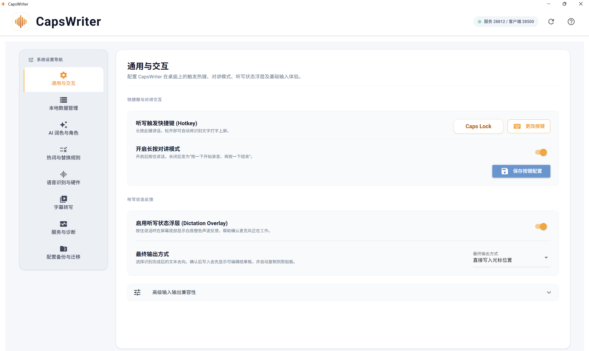

选好本地模型
首次引导帮你了解硬件、下载模型。也可以跳过，之后在模型中心继续设置；已有模型可沿用。
WINDOWS · 本地语音工作台
按下快捷键，说出想法。
把日常听写、文件转写和你的专属热词，
放进一个熟悉的控制中心。
本地识别无需账号 · AI 润色由你选择开启
熟悉的界面，清楚的状态
听写方式、AI 角色、热词、模型与字幕，
沿用现有的八项导航。

从安装到日常使用
首次引导帮你了解硬件、下载模型。也可以跳过，之后在模型中心继续设置；已有模型可沿用。
长按或单击快捷键，直接写入或先确认文字。编辑后的浮层保留在屏幕上，留出从容修改的时间。
加入音视频文件，查看任务和独立保存的结果。中断的文件可以单项重试，原文件与旧字幕保留。
数据留在你选择的地方
模型安装后，本地语音识别不需要把录音上传到云端。只有你主动开启 AI 润色时，相关文字才会发送给所配置的服务。模型下载和手动检查更新需要联网。
下载中心
V1 安装包正在准备与验证，公众下载尚未开放。你可以先查看 GitHub 源码和开发记录。
通过安装程序配置应用和快捷方式。升级与卸载默认保留模型、配置及个人数据。
实际文件、大小、校验值和签名状态将在验证后显示。
解压到可写目录直接运行。应用数据保存在便携目录，可连同模型一起迁移。
与安装版同源构建，压缩包中不预装大型模型。
首次使用需要单独下载或导入模型；模型大小和保存位置会在下载前展示。原生窗口需要 Microsoft WebView2 Runtime。微软官方获取入口 ↗
使用之前
V1 保留原有识别引擎、输入模式、AI 角色、热词与历史功能。升级应先备份；检测到已有模型时进入常规界面，模型加载失败会提示修复，不会擅自切换成新下载的模型。
支持的本地引擎可以使用 CPU。模型中心会根据实际可用后端给出保守建议，你也可以手动选择。具体速度取决于设备、模型和音频，网站不承诺未经实测的性能。
关闭控制中心窗口后，只要应用仍在托盘后台运行，模型下载继续。选择完全退出时会安全暂停，之后重新打开可恢复。转写任务若不能安全留在后台，会在关闭前给出明确提示。
重试会按原模型与参数从该文件开头重新转写，不承诺精确音频断点续写。每次运行使用独立产物目录，保留以前成功生成的结果。
项目源码使用仓库中的 MIT 许可证；第三方依赖和语音模型分别适用各自许可。模型中心会展示具体模型的来源与许可。请在使用和再分发前查看相应说明。